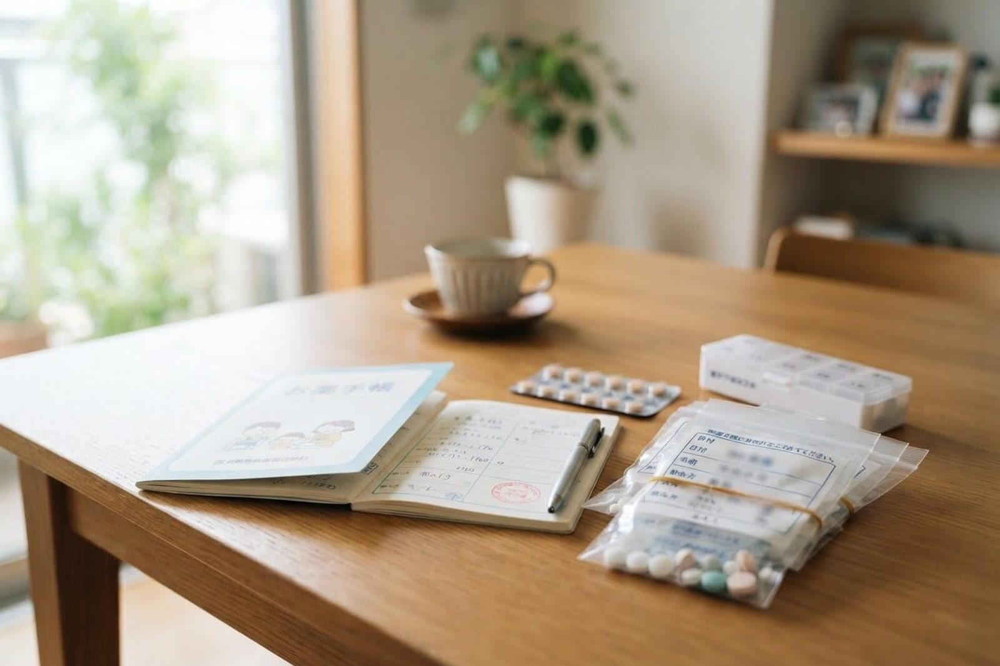

薬を飲み忘れたときはどうすればいいですか？お薬手帳は毎回必要ですか？
A. 回答まず覚えておいていただきたいのは、飲み忘れた分を取り戻そうとして、2回分をまとめて飲まないということです。一度に多く飲むと、効きすぎによる思わぬ症状につながることがあると考えられています。気づいた時点で1回分だけ飲むのか、その回は飛ばして次の時間から通常どおりに戻すのかは、お薬の種類や飲む回数によって対応が異なりますので、必ず医師・薬剤師にご確認ください。また、お薬手帳は飲み合わせの確認や重複投薬の防止に役立ち、災害時の備えにもなります。受診のたびにご持参いただくことをおすすめします。

飲み忘れに気づいたときの基本
飲み忘れは誰にでもあることで、それ自体を責める必要はありません。大切なのは、そのあとの対応です。
- 2回分をまとめて飲まない：これが最も大切な原則とされています。一度に多く体に入ることで、効果が強く出すぎたり、思わぬ症状が現れたりすることがあると考えられています。
- 対応はお薬によって異なる：「気づいた時点ですぐ1回分を飲む」ものもあれば、「次の服用時間が近ければその回は飛ばす」ものもあります。自己判断せず、医師・薬剤師にご確認ください。
- 飲み忘れたことは正直に伝える：伝えていただくことで、効果が出ていない原因の見立てが変わったり、飲む回数の少ない形へ見直しを検討できたりします。「言いにくいこと」ではありません。
- 自己判断で中断しない：症状が落ち着いたからと自己判断でやめてしまうと、かえって状態が不安定になることがあるとされています。
- 残っている薬は捨てずに持参する：どのくらい飲めているかを確認する手がかりになります。
飲み忘れを減らす工夫
ご自身に合った仕組みをつくることで、飲み忘れは減らせるとされています。
- 食卓や洗面所など、毎日必ず目に入る場所に置く
- お薬カレンダーや一週間分のケースを使い、飲んだかどうかが見て分かるようにする
- スマートフォンのアラームやカレンダー通知を活用する
- 朝食後・就寝前など、毎日の決まった行動とセットにする
- 複数の薬がある場合、まとめて一包にできないか薬剤師に相談する
- ご家族と一緒に確認する時間をつくる
お薬手帳は毎回必要ですか
結論としては、毎回お持ちいただくことをおすすめします。お薬手帳は「もらった薬の記録」であると同時に、安全に薬を使うための情報源だからです。
お薬手帳が役に立つ場面
- 飲み合わせの確認：複数の医療機関から薬が出ているとき、一緒に飲んで問題がないかを確認できます
- 重複投薬の防止：名前は違っても似た働きの薬が重なっていないかを確認できます
- 副作用やアレルギーの記録：過去に体に合わなかった薬を記録しておけば、同じことを繰り返しにくくなります
- 市販薬やサプリメントとの関係：ご自身で購入したものも書き込んでおくと確認に役立ちます
- 災害時・急な入院時：手元に薬がなくても、何をどれだけ飲んでいたかが分かることで、治療の継続につながります
- 旅行先や救急受診のとき：初めての医療機関でも、持病や治療内容を短時間で正確に伝えられます
近年は電子版のお薬手帳（スマートフォンのアプリ）も広がっており、服薬歴のほかに血圧や血糖値などの健康情報も記録でき、医師・薬剤師と共有するツールとして活用できるとされています。紙の手帳を忘れがちな方は、こうした形も選択肢になります。ご利用の場合は、受付・診察の際にお申し出ください。
ジェネリック医薬品について
ジェネリック医薬品（後発医薬品）は、先発医薬品と治療学的に同等であるものとして製造販売が承認された薬で、一般に研究開発にかかる費用が抑えられることから、先発医薬品に比べて薬価が安く設定されています。
| 項目 | 先発医薬品 | ジェネリック医薬品（後発医薬品） |
|---|---|---|
| 位置づけ | 最初に開発・承認された薬 | 先発医薬品と治療学的に同等であるものとして承認された薬 |
| 薬価 | 開発費用が反映されます | 一般に先発医薬品より安く設定されています |
| 見た目・添加物など | — | 形や大きさ、味、添加物が異なる場合があります |
| 選び方 | どちらを選ぶかはご本人の希望を含めて相談のうえ決めるものです。薬によっては変更が適さない場合もあります | |
「安いほうがよい」「これまでと同じものがよい」など、お考えはさまざまだと思います。飲みやすさや形の好み、これまでの経過も含めて、遠慮なくご相談ください。制度の取り扱いは変わることがありますので、詳しくは医師・薬剤師にお尋ねください。
当院での対応
当院は、他の医療機関の受診状況や薬剤の処方内容を把握したうえで服薬管理を行います。複数の医療機関にかかっている方ほど、全体を見渡す視点が大切になりますので、お薬手帳や他院で処方された薬の情報をお持ちください。
- 予約：一般の診察は予約なしで当日受診いただけます。受付順にご案内します。
- 持ち物：健康保険証（マイナ保険証）、お薬手帳、現在服用中の薬（現物または写真）、他院の紹介状や検査結果があればあわせてお持ちください。
- 費用：診察・処方は保険診療の対象となります。詳しくはお問い合わせください。
- 薬が残ってしまったとき：次回の処方日数を調整できる場合がありますので、残っている量をお知らせください。
- 診療時間：月〜土曜日 7:00〜12:00 ／ 月〜金曜日 14:30〜18:30（土曜日は14:30〜17:30まで）。朝7時から診療しており、無料駐車場を22台分ご用意しています。
受診時に伝えていただきたいこと
- どの薬を、どのくらいの頻度で飲み忘れているか
- 飲みにくさの理由（錠剤が大きい、回数が多い、味が苦手など）
- 他の医療機関でもらっている薬、市販薬やサプリメントの有無
- 薬を飲んで気になった症状があったかどうか
- 過去に体に合わなかった薬、アレルギーの経験
参考にした情報
お薬のことで気になる点があれば、診察の際にお気軽にご相談ください
最終更新：2026年8月26日